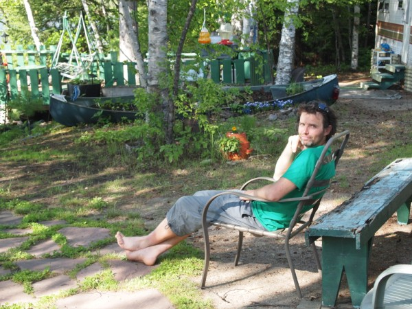
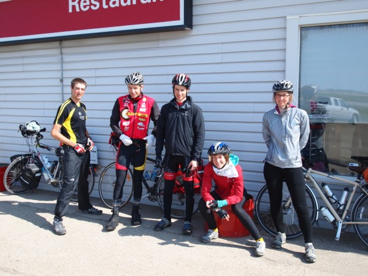
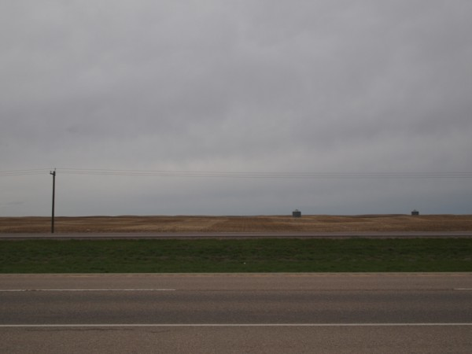
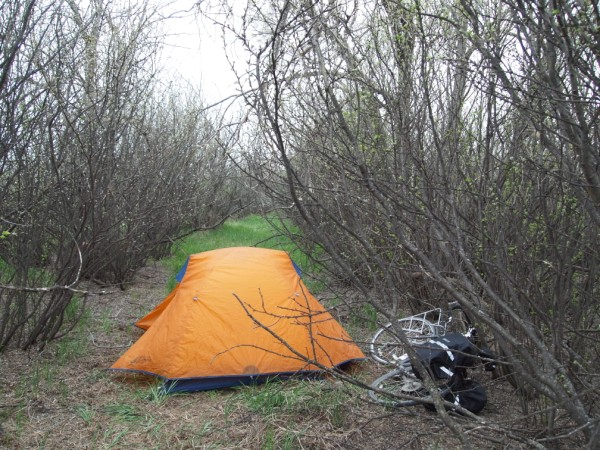
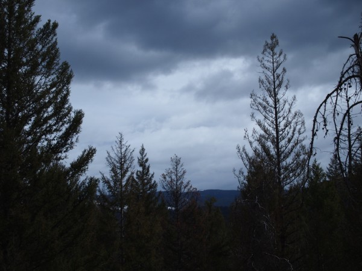
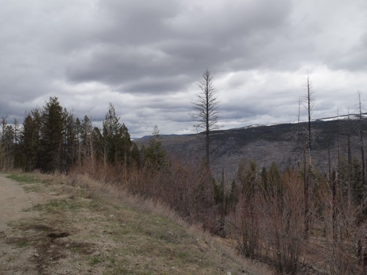

ByBike.ca
June 23, 2011
Today was a hard day. In fact, I think it belongs on the short list for most miserable day of the trip. As always, though, now that it's done I feel satisfied, accomplished, hungry, and ready for bed. Oh, and very stinky, too.
I started at 6:00 AM and finished at 6:00 PM, which is the second time I've spent 12 hours on the road (the first was on the way to Golden, B.C. over Rogers Pass). I was probably in the saddle for 10 of those 12 hours, and in that time I rode 180 kilometres. The wind and rain were not very strong, but they were annoying nonetheless. Combined with dense fog and poor road conditions (which made traffic extra scary) as well as two flat tires, I was very glad to get off my bike when I reached my destination of South Baymouth.
Now I'm at a diner, writing as I eat (and everybody is staring at me—it's not a big place). I won't really be riding for the next little while, and probably not writing, either. After a nice ferry ride tomorrow morning I plan to relax with my brother and his wife for several days. When I start again, I'll be riding out of Toronto.
June 22, 2011
It was a sobering thought, as I drank all four cups from the motel coffee maker this morning in my still-damp tights and sweater, to realize that I was about to become even less dry and less warm. Wesley had gone on ahead, hoping to ride all the way to Sudbury today, which meant that I was alone when I walked my bike out into the wind and the rain. 90 minutes later I was only 20 kilometres down the road, so when a passing motorist stopped and offered me a place to stay for the night I happily accepted.
John is an avid outdoorsman—a former guide whose self-published books for hunters and fishers sell by the thousands. He lives alone on the shore of Lake Huron, and I spent the day chatting with him at his kitchen table as he smoked cigarette after cigarette. For supper, he cooked a delicious (and enormous) steak dinner.
Tonight I'm going to bed early, since tomorrow's forecast is no better than today's and I still have to get to the ferry on Manitoulin Island in time to meet my brother on Friday. I don't care how cold and wet I'll be—it's going to be very good to see him.
June 21, 2011
After writing last time I was joined at Vélorution by two other cyclists. Gavin recently graduated law school and he is raising funds for Ecojustice on his way across North America—check out their blog where they post updates on his trip. (While I'm linking to blogs, check out French David's blog, too—I think he has some sweet pictures somewhere.) Wesley is from Los Angeles and he's doing more or less the same route as me.
After a nice rest day, Wesley and I headed out this morning against mild headwinds and heavy rain. By the time we got to Blind River, the headwinds were heavy too. We decided to split a motel room. Needless to say, it's been a long day so I won't write much more but I do need to mention a highlight from a town called Bruce Mines—the Bavarian Inn serves a delicious sausage meal with sauerkraut just like my Omi used to.
June 19, 2011
Bonne fête des pères! Dad, I'm going to write this in English because my French writing isn't what I'd like it to be (yet). We are so alike. I think when people say that they're referring to physical resemblances or our similar goofy senses of humour, but the part of you that I'm most grateful for is a side we only show those close to us. Your quiet, contemplative nature defines me more than our stunning good looks and our hilarious jokes—it's what's gotten me through the long lonely stretches on this trip and in life. The most important things you've taught me about being a man are that machismo is foolish and that integrity matters. I love you and I miss you and I think of you every time I eat those clubhouse sandwiches.
I slept in today, and it felt really good. When I woke up, the lady next door (in her RV) invited me over for breakfast and I happily obliged. I finally got going around 10:30, facing strong headwinds and some surprisingly tiring climbs on my very short ride to the Soo. I got here around noon and stopped at a place called Fratelli's, where I ate an entire pizza and a piece of chocolate cake—way more calories than I burned on my short ride today, but I never had supper after my 200 kilometres yesterday so I was famished.
Now I'm at the best bike shop in the world. Don't get me wrong, my guys at Olympia Cycle & Ski in Winnipeg are awesome, but they don't have a campground. Vélorution in Sault St. Marie has free camping for cyclists, and even though the store is closed today the owner has posted his home phone number outside and gladly gave me the rundown of everything when I called to interrupt him from his Sunday afternoon. I'm going to spend the day here tomorrow getting properly rested, and then it's only a few short days before I get to hang out with my brother!
June 18, 2011
It feels like I left Wawa days ago. Maybe that's because I'm 200 kilometres away.
The longest ride of my life thus far happened almost by accident, at a point in my trip where I was starting to seriously doubt what my legs could do. The fear of exacerbating my injuries, of pushing myself too hard, was beginning to drain me. Fortunately today I was put in a position where it made sense to test my limits a bit, and my legs held up just fine.
Yesterday I was able to check my e-mails from the restaurant, and saw that David had messaged me suggesting a nice place to camp. It was a spot in the bush about 130 kilometres from Wawa, and I decided that would be my destination today. To make a long story short (because I'm very tired), when I got there the space was already occupied by some partying teens (it makes me feel really old to say that) and I felt uncomfortable pitching my tent so I just kept riding. There wasn't really anywhere else to camp, but I told myself that if anything started to hurt in a bad way I'd just crawl into the woods for the night. Nothing hurt, so I kept going. By the 200 mark I was losing sunlight and there happened to be a campground right there so I got a site. Now I'm only 30 kilometres from Sault St. Marie—I'm going to sleep in tomorrow and then meander over to the Soo, where I still have a full rest day waiting for me. The emotional roller coaster is at a high point!
June 17, 2011
I met another cyclist named Gary this morning in the motel restaurant. His reputation preceded him through David, who'd ridden with him for a short while at the beginning of the tour, and I was not surprised to learn that Gary had been in touch with David again recently and learned about me that way as well. After a short chat, we rode separately to Wawa. Upon arrival, however, our paths crossed again, and without the will to test fate further we decided to eat lunch together. (Clubhouse and beer! Photo included. No photo of Gary, though... hmm.)
Gary's an older fellow who's travelled all over the world by bike. We got along really well and it was lots of fun to hear about his adventures thus far. We spent an entire afternoon chatting before he realized he had to go, and since he is taking a different route than I am it's unlikely that I'll see him again. I chose to stay just outside of Wawa for the night, making camp behind an abandoned motel.
My legs were okay today but I'm starting to get eager for my planned day off in Sault St. Marie (three days from now) as well as my longer break visiting my brother and his wife (a week from now). I've found the last few days to be very difficult mentally, in large part because I'm afraid to push my legs too hard but probably also because I'm just kind of due for a breakdown—hopefully staying off the bike for a few days will help.
June 16, 2011
Almost a hundred years ago, a Winnipeg boy not too different from myself stopped in the town I'm in now—White River. He was on his way to war, and so it seemed logical to him to buy a black bear. (It was a different time, etc.) He named the bear after his home town, and the rest is the story of Winnie the Pooh.
My day was a bit less exciting than that. My legs were okay this morning and I got off to a slightly earlier start than yesterday, although still later than I would have liked. They held up well throughout the day but I'm still taking care to stretch, ice, and massage everything as I write.
No, today's battle was not with my legs so much as with the excruciating heat. It's a long way from Marathon to White River, with very few places to stop in between. (There are no gas stations or convenience stores, but there are two motel/restaurants right beside each other about halfway.) Once again, I was grateful for the large amount of water that I carry.
Tonight I'm in a motel. I've had enough heat and enough flies and I need to get myself back onto a decent schedule—I figure not having to break camp tomorrow morning might help me leave earlier than I have been and hopefully beat the scorching afternoon sun.
June 15, 2011
My precautions were affirmed this morning when I woke up with a hamstring so tight that I could barely move my leg. The situation improved after massaging and stretching it for a long time, so I hit the road. The late start, combined with the hot sun and the fact that now both legs need special attention, led me to stop about 20 kilometres short of my destination of Marathon, ON. I bought some ice at a gas station and made camp in Neys Provincial Park, a picturesque spot on Lake Superior with an enormous sandy beach. After going for a dip and warming up some canned chili with canned corn for supper, I'm taking care of my legs and getting ready for bed. Hopefully tomorrow morning everything will be a bit less stiff than it was today.
June 14, 2011
"Holy guacamole, Batman—I'm flying! One hundred and forty kilometres per hour!"
"Cowabunga!"
That's a paraphrased version of my conversation with David this morning as we zoomed down an enormous hill at break-neck speed. Not quite 140 km/h, though—we'd met a very animated man cycling from Ottawa to Banff yesterday who swore up and down that he'd gotten his bike up to 90 km/h in these hills, so we joked about it often.
For every speedy downhill, though, there is (of course) an agonizing climb. While David seems to almost prefer riding up to riding down, I do not. He would always wait patiently for me at the top, but when my leg started to feel strained this morning I told him that he should go on ahead. We made it to the cozy town of Rossport together and shared breakfast there before parting ways.
Yesterday's ride from Thunder Bay to just past Nipigon was fun and quick—we rode hard, averaging about 25 km/h. After a fantastic lunch in Nipigon (a loaf-worth of tuna, tzatziki, and lettuce sandwiches between us with an entire strawberry-rhubarb pie for dessert) we continued for about an hour before looking for a place to camp. We eventually came upon a narrow peninsula in Lake Superior full of summer camps (that's what they call cottages or cabins in this region, I've learned) and decided to ask the residents if we could pitch our tents on their property. The first person we asked rejected us (somewhat rudely, in fact) but then we met Margie.
The opportunity to meet people like Margie is reason enough to do this trip. Margie is a kind and gentle woman, somewhere between my mother and my grandmother's age. She possesses the sort of quiet strength that comes with age to those who've earned it. When she opened her door and we introduced ourselves and asked our question, her face broke into an enormous smile. She said that we could pitch our tents if we wanted, but we were welcome to use her bunkhouse instead, so that is what we did. After going for a swim and cooking supper, we sat around the fire and got to know each other. This morning, Margie made us coffee before we left.
After saying goodbye to David in Rossport, I sat in the park for a long time. I was hesitant to continue and over-exert my leg (the opposite one is sore now, probably in compensation), and the last few days of hard riding have kept me well ahead of schedule. I eventually decided to treat myself at the restaurant, where I was offered a remarkable price on their guest house and decided to stay for the night, and stay in style. The room is enormous—I feel like a small family could live here comfortably—and it's less expensive than some motels. I'm certain that the afternoon off will have my legs in fine form for the days ahead.
PS. Rossport doesn't have a grocery store, and I didn't want to go to a restaurant again for supper, so I pulled something together on my stove from the odds and ends in my pack—see the photo below.


June 12, 2011
David is quite the taskmaster. Yesterday we rode the 120 km to Thunder Bay at an average of 25 km/h, which is pretty extreme given the terrain but my injuries held up fine. Once there, we found food and stopped at a bike shop (David was having some wheel problems) and found more food. We bathed in Lake Superior and made an enormous supper on the shore before finding a nicely hidden little spot on the water for camping.
Today we stopped at a laundromat and ate a delicious breakfast of cinnamon buns and coffee. (A guy in a pizza shop gave us free cinnamon buns!) Now I'm using the internet at a generous and difficult to find motel (the library was closed since it's Sunday), stopping to chat with the elderly owner every now and then about some crazy Bermuda Triangle documentary on the Space Channel. I'm not sure where we'll stay tonight, but tomorrow we'll be back on the remote road towards Sault St. Marie.
June 10, 2011
Today started badly. The weather was nice, the wind wasn't too harsh, but I just kind of felt off—I blame the fact that I had to start cutting my Mom's granola with Harvest Crunch this morning to make it last a bit longer. I took my time, stopping often, and finally decided that it was time for my secret weapon. I'd remembered to pick up some Backcountry Pantry Pad Thai when I was in Winnipeg for just such an occasion, and I made some coffee along with it for good measure.
Shortly after my self-administered morale injection I passed my second east-west cyclist. We chatted (in French) a bit longer than I did with yesterday's cyclist, still yelling across the road and repeating ourselves when passing trucks interrupted our conversation. He told me that there was another cyclist only five minutes ahead of me, so I redoubled my efforts in an attempt to catch up.
After riding hard for about twenty minutes with no success, I came across the small town of English River and was distracted by the thought of food. Fortunately the other cyclist had been too, so after a chocolate milkshake, tuna sandwich, and fuge brownie I finally met the mystery man. His name is also David, and he's from France. Riding with him for the rest of the day was the kick in the pants I needed—my average speed after meeting David was probably almost two times what it had been for the first part of the day. I picked up some ice in Upsula and we made camp in the bush a few kilometres later. The mosquitoes here are unreal, but besides being pretty tired I feel great.
June 9, 2011
It's always remarkable to me how the rest of the day fades away once I get to my campsite. The effect is much less pronounced in motels or hostels—there I always end up feeling restless and unsure of what to do after putting my bike away. Making camp, on the other hand, has become a therapy of sorts.
In the morning, although I am sometimes reluctant to get on my bike I am always thrilled once I do. (It's an odd sort of addiction that way.) By evening, though, the romance is usually gone—hence the camping therapy.
Today, for example, got off to a lovely start with continental breakfast, beautiful blue skies and only mild winds. I rode at a pretty decent pace, and saw the first of what I presume will be many cyclists crossing Canada from east to west. (We shouted a conversation across the highway briefly. Well, he shouted... my voice just carries well.) After about 100 kilometres, though, my body didn't want to keep going.
I haven't done much more than 100 km in a day since I hurt myself, and I had considered the possibility that I wouldn't make it to Ignace (about 150 km from Vermilion Bay) today, but I didn't think it was a problem—I would just pitch my tent in the bush after going as far as I could. However, I'd failed to consider my water supply. There is literally nothing between Wabigoon and Ignace (there are lakes, but not easily accessible from the highway), and my water was running low. It already looked like it would be a rather dry 50 km—I certainly didn't have enough to cook supper, cook breakfast, and then ride to Ignace. On top of that, my recent injury means that I really shouldn't go to bed without icing my aches first.
Fortunately, the parts of me that hurt the most were my butt and my quads, not my Achilles or my knees, so I pushed slowly through. By the time I got to Ignace, I was exhausted and cranky. All I wanted was food, and I wasn't going to wait to cook it. I also realized that I've been forgetting to document my eating adventures for the past several days, so I pulled into the first truck stop I saw and sat down with my camera. Almost immediately, I heard a shriek from another table and the waitress screamed to call 911—an elderly man had gone unconscious.
As horrible as it is, I admit that I was inwardly annoyed at the man for delaying my meal. I nevertheless got up and offered my first aid services, but by then there was already a small crowd gathered around the man and they seemed to be doing sensible things. I went back to my table and waited for the paramedics to arrive so that I could eat, at which point a schizophrenic man sat down beside me and started chatting. I'm sure he was a kind and gentle fellow, but by that point I was starting to get delirious and I had difficulty feigning any sort of politeness. Eventually I got my food, ate, and got out of there, but with all the commotion I forgot to take a picture. (It was spaghetti with meat sauce, salad, garlic bread, and a milkshake, for the record, and it was delicious.)
The point is, I really needed my campsite therapy today, and it delivered in spades. I'm in fantastic spirits, even though the mosquitoes finally found me tonight. (They'd been oddly absent for the past little while.) I got a nice little site in the trees at a campground that's on a beautiful little lake. There's trails out back that I explored a bit, and a gazebo where I'm sitting now with ice on my knees after stretching on the floating dock. (I'm not taking pictures, because the lake looks like an ordinary lake and the trees like ordinary trees. This place could be anywhere, but tonight it is a paradise and that's what I want to remember.) After a long, hard day, life couldn't be better!
June 8, 2011
Instead of an early start this morning, I decided to hide out in Vermilion Bay for another night. The weather is ugly and my leg was kind of sore this morning so I think it's a good day for a break. I'm still a day ahead of schedule so I can relax, which is convenient since I'm pretty worn out (even though my last few days of riding were relatively short). I'm a bit concerned that I might be getting sick, but hopefully a good rest will sort it out.
June 7, 2011
The only thing worse than cold rain and headwinds is cold rain and headwinds while climbing a hill. Indeed, yesterday's delightful terrain became a menace today, with strong enough headwinds to make even the downslopes difficult. The rain did let up around mid-afternoon, but the wind howled on. Fortunately, I didn't have too far to go, so even with my very late start and brutally slow pace I rode the 93 km to Vermilion Bay in time for supper.
The motel/gas station/convenience store/restaurant combos on this desolate patch of highway all have a definite No Country For Old Men air to them—at first glance, anyway. I stopped at the one in Willard (actually, I think that gas station/motel thing is Willard) for lunch and to dry up a bit and was pleasantly surprised by the kindness of the odd assortment of personnel inside. I had time to sit through an entire CSI re-run while I ate a chicken burger and drank the coffee they continued filling for me. The rain ended with the episode, and when I left the guy gave me some bran muffins for the road. I stopped at another place later just to get off my bike for a minute—I didn't find the staff quite as friendly but I did kind of like their sign, and it was finally nice out (but still windy), so I took a picture.
When I got to Vermilion Bay the clouds had returned. With thunder and lightning in every direction, I decided to get a motel room and just barely had time to grab a convenience store supper before it started pouring again. I'm looking forward to a good, dry, windless sleep and hopefully getting the early start tomorrow that I was a bit too lazy to get today.
June 6, 2011
Deer are a very common sighting these days, but last night I was able to get a picture of one just a few feet from my bike. I went to bed shortly afterwards, only to lie awake and listen to my tent get battered by a very impressive thunder storm. When the clouds cleared late in the night I got out of my tent to look at the stars. I haven't gotten to see them much this trip because I'm always asleep, so I was grateful for the chance to see the clear night unfettered by city lights.
This morning was some more of Mom's granola (My new breakfast staple!) after sleeping very late, and then a short fun ride to Kenora. The terrain has become decidedly hilly and since I was in no hurry and there were almost no mosquitoes on the road I was able to meander slowly up the slopes and then coast down at fantastic speeds. There was also a nicely paved shoulder for the entire route today, which helped a lot.
Once in Kenora, I explored for an hour or two—I even had time to get lost and fix a flat—before settling my bizarre McDonald's craving and finding a place to camp. The sun is shining and the winds are easy, so life is good.
PS. After writing I went for a little walk with my camera, and I met a guy who's planning to be the first ever to sail across the Arctic Ocean. Seriously. He's invented a ship that can sail on ice and water—see the photos below. It seems very cool. Unfortunately, my French isn't technical enough to ask him all the geeky questions that I would have liked to (he's a francophone of unknown origin) and I didn't even get his name, but his website is sebroubinet.eu.
June 5, 2011
West Hawk Lake. It was only a 50 km ride from Prawda today, but I realized last night that I'm still way ahead of schedule and it would feel strange for me to ride past this place without stopping.
I camped here with my family almost every summer when I was younger, and very little has changed since then (I guess it hasn't been that long since I was younger). It's still pretty early in the season, so I have the campground all to myself. I started by getting lunch at Pittman's on 44, where I could almost still picture my Dad and my Opa each trying to pay the cheque first. I then rolled over to the campground office, where I had my pick of sites. I pointed on the map to the section we used to always call Mennonite Hill and since everything was empty now they gave me the spot right at the top. I set up my tent, I walked to the beach and then the store where I got a drink and some ice. Finally, I returned to my site where I pulled out my netbook and wrote this while icing the sore spots and trying to get rid of my farmer tan.

June 4, 2011
After a week of rest and quality time with friends and family, I'm on the road again. It took me a while to get going this morning, and as eager as I was to continue my trip I was unsure how my tendon would perform. I was afraid that I might have to go back to my parents' house after riding a block. It seems to be holding up okay, though (many thanks to Mike Booth from Massage Athletica on Waverley) but I'm planning to take it easy for a while regardless. I only rode 100 km today and I'm contemplating a really short day tomorrow to hang out in Whiteshell Provincial Park—a favourite vacation destination from my childhood.
Today's ride was really nice, even though there was no shoulder most of the way. I even had to double check my odometer at one point—I couldn't believe how easy it was to ride with a tailwind! Now I'm resting, icing my aches, and contemplating a 7 o'clock bed time.
By the way, now is as good a time as any to thank my parents for all their support during this trip (and in life, but that's a book's worth). As soon as they realized that they couldn't talk me out of it, they've been on board 100%. They helped me buy my bike and countless other things, they fed me this week (Not a small undertaking!), they picked me up when I was injured and three hours away, and they just always have my back. I try not to use this space for long public thank-yous and plugs very often but it would be wrong not to do it for my parents. Thanks Mom and Dad!
May 28, 2011
My alarm woke me abruptly at 5:30 this morning, and I packed my panniers quickly in order to make it to the breakfast room for 6:00. Continental breakfast is always a treat for touring cyclists, since we can usually find a way to pack a lunch or two out of it as well. My Achilles tendon felt okay, so I checked out and was on the road by 6:45.
An hour later I was on the phone with my parents, asking for an emergency pickup. My tendon was done. Although I suppose it's fortunate that my injury should occur so close to home (making it easy for me to rest it properly) I was very dejected to make that call. Nevertheless, it wasn't worth turning a temporary setback into a lasting problem so I pulled into the town of Douglas, Manitoba to wait.
Douglas is a small town with no restaurant and a single small general store which was closed when I arrived. I sat there for a while and taped up my foot, after which a local 9 year old boy named Sebastian decided to be my friend. When he learned about my injury, he implored me to go back to his house for ice, where he introduced me to his bemused mother and his two younger siblings. I hung out with Sebastian and his spunky gang of little friends for several hours before my Dad arrived to pick me up. I'm excited to take a few days off at home before continuing on, and hopefully my tendon will be better by then.
PS. I also grabbed a couple pictures from Jodi of our ride to Moose Jaw. We are all huddled together in a tiny roadside bathroom in Parkbeg, Saskatchewan, ecstatically grateful for shelter from the wind and rain.
May 27, 2011
This evening I ate at a gas station diner, completely alone for the first time in days. Clubhouse on rye (hold the fries), coffee (black), apple crisp and ice cream, please. Oh, and a bag of ice.
This morning I'd left Moosomin with the others, taking turns breaking the harsh wind (as we'd become accustomed to) while battling cold rain. I entered my beloved home province utterly dismayed, the prairie paradise I'd been building up in my head for weeks shattered by the brutal reality of cold, wet misery. The tourist information centre at Kirkella was a welcome temporary refuge—the staff were extremely friendly and helpful and they even had free coffee!
We rode hard and made good time into Virden, where we stopped at a Subway for lunch. After lunch, the clouds finally parted and the wind turned: my prairie paradise at last. For hours we zoomed along the freshly paved shoulder (No sign yet of the dangerous Manitoba shoulders we'd been warned about!) with sun overhead and the wind at our backs. I had to stop at one point because my Achilles tendon was bothering me, but Andrea did a fantastic job of taping it up so I could keep going. Later, I had a flat and I was starting to lose it a bit—Derek helped me fix my flat and keep some semblance of sanity. Finally, though, my foot began telling me that it needed a proper rest, so when we reached Brandon I bid my friends adieu and found solace at the Husky Restaurant.
Now I've found a motel for the evening, enticed by the idea of a hot bath and the promise of being on my feet far less than if I had to set up camp. Of course, all they had left were smoking rooms—I almost want to smoke in here just because I can, but I figure with a long day of riding ahead I will have to settle for dreams of being trapped inside a giant ash tray. Tomorrow, assuming my tendon feels better, I will do my first 200 km day all the way to Winnipeg.
May 26, 2011
Yesterday morning was beautiful. We all wheeled out of the Super 8 in Moose Jaw together and revelled in the light breeze and clear sky. During one of the many requisite wardrobe changes/sunscreen re-applications another cyclist joined our group. Marc-André is riding home to Québec after starting his journey in Los Angeles—he has already done over 8000 km.
I hit a big number of my own yesterday as my odometer rolled over 2000 km for the trip. We reached Regina shortly afterwards, where we parted company with René (who is flying home to Montréal as planned and who I look forward to visiting when I get there) and the Ontariarians (that's what I sometimes call Derek and Andrea in my head) who were meeting some friends from their fantastic charity—remember to check out their website at www.miles4minds.net and donate money to the Brain Tumour Foundation of Canada if you haven't already!
Jodi, Olivier, our new friend Marc-André and I all continued past Regina after stocking up on groceries. The headwinds picked up a bit but we were still able to make it to Wolseley, Saskatchewan for a total of 180 km under the prairie sun. Once there, we enjoyed a delicious meal—the sort of meal that you can only feel okay about after having ridden 180 km. (We couldn't decide between pizza and burgers so we had both!)
After that we found a campground which was slightly flooded but still perfect, and were pleasantly surprised to have Derek and Andrea catch up to us after their long stop in Regina (because they are absolutely crazy). We all slept like rocks. This morning we got out early into a strong headwind of about 25 km/h and by the end of the day our headwinds had increased to 60 km/h. We were still able to make 130 km, reaching the town of Moosomin where we have all crammed into a motel room in anticipation of a storm this evening.

May 24, 2011
No pictures (although I will get a copy of some of today's group shots before long), tired, and for some reason I feel like writing in the style of acclaimed 2000 film Memento.
A bedraggled gang of cyclists roll into the prairie town of Moose Jaw, letting out a quiet whoop as they turn into the parking lot of the Super 8.
Six soppy cyclists overtake a small teahouse in the quaint town of Mortlach, holding council at the only large table while the kind hostess takes their clothes home to her dryer.
A line of brightly adorned cyclists ride single file along the shoulder of the Trans-Canada, taking turns leading against the cold, harsh wind and the sharp rain.
A group of poor and battered souls gather together in a tiny roadside bathroom for twenty minutes, their only respite from the bitter weather.
Raindrops flew sideways as all six of us emerged from the motel in Chaplin, like six warriors into battle.
May 23, 2011
No flat tires today!
This morning's wind and rain clouds were foreboding, and Jodi and I spent a long time in Swift Current's Tim Hortons in an attempt to delay the inevitable. Eventually, though, we knew we had to go. It was a hard day with steady 25 km/h headwinds and we stopped short of our preferred destination, putting us even further behind for the rendezvous with Ben in Regina but keeping perfect pace with Olivier and René as well as Derek and Andrea who have joined us after some wild rides of their own.
Cold and wet, we all opted for the motel in Chaplin, Saskatchewan. After some tea, a shower, a meal, and fellowship with new friends I am in excellent spirits and more than ready for bed.
May 22, 2011
I am so confused about what day it is. I know I didn't write yesterday, so I can add two to the previous entry's date. I know that it's a Sunday because everything is closed. I know that I'm two days away from Regina, and I'll be getting there one day late for Ben's rendezvous on the 23rd. (I'm hoping to find him there anyways as I know he was planning to take a day off once he got there.)
I was far too tired to write yesterday. After writing the day before I did end up exploring near the campground a bit, taking some photos of Medicine Hat's gorgeous rolling hills. I felt old that night as I tried to sleep while the rest of the campground celebrated Friday night of the long weekend—a celebration which would not have been complete without firecrackers at 2 AM. A bit of karmic justice for my own May long celebrations of years past, perhaps!
Yesterday Jodi and I rode 150 km to the small town of Tompkins, Saskatchewan (she'd caught up to me in Medicine Hat after a few marathon days of her own). We started with the wind at our backs but, as is quickly becoming customary, saw the wind change 180 degrees around midday. I also had another flat (on the back tire this time) but fortunately we were close to Alberta's last visitor information centre and I was able to patch my tube in picnic-table comfort. I was unable, however, to find anything in my tire which may have caused the leak.
Since we'd made good time that morning we decided to push past Maple Creek another 50 km up to Tompkins, which was probably a good choice but left us (me, in particular) completely exhausted. It also resulted in us getting rained on quite a bit. Upon arrival, and after laughing a bit too hard at the sign of Tompkins' claim to fame (which we made sure to get pictures of on the way out this morning) we split three backpacker meals (each meant for two...) plus a dessert, set our tents up in the rain, and went to sleep.
Yesterday was not to be a quiet night either, though, as our campsite was about a block away from a train crossing. I grew up with lots of train tracks nearby and usually find their sound quite soothing at night, but I found it a lot less soothing last night as the horns blared at least once every hour with only a thin sheet of tent fabric to muffle the sound.
This morning we were a bit slow to get going, and once on the road were pleasantly surprised to have Olivier and René roll up behind us. Shortly after that, my back tire acted up again, and even though it took a long time for me to find the leak I was finally able to find the culprit in the tire—another short metal pin. With that delay, and with the wind turning on us early, we decided to make it a short day and stop in Swift Current. It would have been almost impossible to make it to Regina by the 23rd at this rate anyway, so there was no reason not to stop a bit early. Olivier and René found their hotel as Jodi and I found some delicious burgers and a very secluded campsite.

May 20, 2011
I'd hoped to make up for lost time today, and this morning seemed promising as I zoomed out of Brooks at 30 km/h and stayed above 20 km/h for about two hours. The wind turned against me eventually, though, and I also had my first flat tire of the trip.
Twice.
Patching or changing a tube on a loaded touring bike is kind of a pain, especially since I keep my pump buried deep in my bedroll. (It's kind of long and that's just where it fits best.) The first time I went flat I reached straight for my spare tube, planning to patch the old one once I made camp. That's when I found out that I've been carrying around the wrong size tubes for two weeks!
Making a mental note to grab some new tubes when I get a chance, I pulled out my patch kit and got to work. I had a fair bit of trouble finding the leak and the whole ordeal cost me lots of time.
The second time I went flat I had the good sense to check my tire for a culprit. (I had looked the first time, but apparently not well enough.) There it was—a tiny metal pin about as long as the arm of a staple. It was stuck in there pretty good, but I was eventually able to pull it out with my multi-tool.
With all of that, and with an extreme shortage of possible further stops (even just a bush to pitch my tent in) I decided to stop at a nice campground in Medicine Hat for the evening. It looks like I may not make my rendezvous in Regina, but that's okay. Olivier and René are at a motel in town and Jodi just texted me saying she's on her way—no shortage of cycle friends these days!
I didn't get any pictures today, but I expect no shortage of future opportunities to point my camera at these beautiful rolling fields.
May 19, 2011
No bears, drunks, shotguns, or cops last night. It rained pretty heavily, but otherwise all went well. I got an early start against a mild headwind, stopping in Bassano for breakfast and to fill up my dwindling water supply. There I met Olivier and René, two cyclists from Montréal whose reputation preceded them. (Derek and Andrea had crossed paths with Olivier earlier.)
The wind picked up a bit after breakfast, and I was starting to be unsure about reaching Medicine Hat today. After about an hour of rain I decided to call it an early day and pulled into the town of Brooks, Alberta, where the cheapest place to stay seemed to be this Super 8. As fate would have it, this is also where Olivier and René decided to stop for the night. We spent at least an hour chatting and soothing our aching muscles in the hot tub (There is a hot tub here!) and will probably find each other for supper later. For now, though, I think I need a nap!
May 18, 2011
At the beginning of this trip, I told Lucy that I wanted to get a picture of all the friends I made, and all the old friends who I met along the way. I haven't been good at making that happen, though, and I regret not getting a picture with Julia and Brett. They were such incredible and generous hosts, and are such good, uplifting people in general. I know I'm very lucky to have friends like them.
I got a bit of a late start this morning, and although that is sometimes unavoidable I have noticed that all of my worst days happen when I don't leave early enough. Today didn't disappoint.
The wind wasn't too bad starting out, which was nice, but I quickly realized that introduced another problem: mosquitoes. I hadn't run into any mosquitoes yet this trip but today they lost no time in making themselves known. There is a common myth in cyclist folklore which puts the maximum speed of a mosquito at 15 km/h. I disproved that myth today as enormous clouds of mosquitoes swarmed around me at over 20 km/h. Even with my military-strength bug cream (which is covered in scary warning labels) the swarms would follow me, searching for a chink in my creamy armour. Of course, shortly after I got all the problem spots figured out, the wind picked up. Hard.
I fought what must have been at least 50 km/h headwinds for the last three hours of my day, and decided to stop 10 kilometres short of my destination, pitching my tent in the only tree bluff for miles around and hoping that I won't be woken up by drunken teenagers or a farmer with a shotgun or the RCMP or some sort of scary wild animal (I don't think there are bears around here, at least).


May 16, 2011
I'm getting to be a bit of a sucker for old friends. Tonight and tomorrow I get to stay with Brett and Julia, who I've known since my first year of university when we lived in residence together. I hope they weren't taken aback at how huggy I am—it is really nice to see some more familiar faces after hanging out with Ian and Sarah yesterday.
Today's winds weren't quite as bad as yesterday, making for a slightly faster ride than expected after 13 hours of sleep. It felt good to see the skies open up as I made my exit from the mountains into the vast suburbia of Calgary. I found the city very difficult to navigate by bike and was forced to awkwardly ride on the sidewalk more than once. Nevertheless I eventually made it, in excellent spirits and excited about taking another day off tomorrow. (I feel like I've taken a lot of those lately!)
May 15, 2011
After writing yesterday I wound up chatting with several of the bike tourists in the hostel lounge. There were four in total: Barbara and Ben, the old pros, and Derek and Andrea who are about my age. Derek and Andrea are doing their ride in support of the Brain Tumour Foundation to honour a recently lost friend—a cause which is especially dear to my heart since a close family member of mine was diagnosed with a brain tumour and was fortunately able to have it successfully removed. Please visit Derek and Andrea's website at miles4minds.net and donate if you are able. If not, you can still do your part by telling everyone you know about these two crazy and incredible people, their journey, and their cause—passing along their website as you do.
I didn't get to chat with Barbara much, which is a shame since I heard murmurs about her cycling adventures in Asia and I'm dying to hear more. I'm sure I will run into her again soon enough! Ben, on the other hand, I got to chat with for a while. This is his third cross-Canada tour (at 61!) on top of a few European tours including the route of the Tour de France—he was full of helpful little tips. His son is part of popular Canadian rock band The Trews and Ben was excited about the prospect of getting us all into their Regina show for a little rendezvous in about a week. We all made arrangements for how to find each other in the next little while and then went to sleep.
This morning I left early, my lazy day shattered by some brutal headwinds. It was somewhat demoralizing to have to pedal almost as hard going down as I had coming up, but it was good practice for the prairie winds to come. I eventually made it to Banff, where I had made arrangements to meet my dear Winnipeg friends Sarah and Ian for lunch as they were in town for a wedding. The food was delicious and it was nice to take a break midday. I left early in the afternoon to happily discover that Canmore was closer than I thought, and there was a freshly paved bicycle path which took me there—a path which was even somewhat sheltered from the wind.
I am in Canmore exceptionally early, looking forward to an exceptionally long sleep. I could keep riding but I might as well stay here—I will be stopping in Calgary tomorrow night regardless. I apologize for the lack of photos—the mountains looked the same today as they did yesterday.
May 14, 2011
It was a long, deep sleep for me last night and I hope I wasn't snoring too loudly for my Scottish and Belgian roommates. I found a café upon waking and enjoyed a latté and a cinnamon bun as I waited for the grocery store to open, at which point I collected a day's worth of food: six pitas, three big hearts of romaine lettuce, 300 grams of turkey, a small block of cheese, a bottle of ranch dressing, and two litres of chocolate milk. It's 3:30 in the afternoon as I write this and I'm worried that I might not have enough food left for the evening—my body is craving replenishment today.
After eating and stowing the groceries in the hostel I hitched a ride up to the lake (Lake Louise itself is about 5 km uphill from the village bearing its name) and took a look around. My plan was to hike up to the teahouse overlooking the lake, but I hadn't considered that it would still be snowed in. Not having the requisite footwear for trudging through over a foot of snow, I wandered the boardwalk for a bit, explored the fancy lakeside hotel (and looked longingly at the expensive deli sandwiches therein), snapped some shots, and left. Since it was a beautiful day, and since I hadn't been able to hike up the trail, I decided to walk down the road back to the village rather than hitch a ride. Of course, I had only gotten a short way down when Jodi and her parents showed up out of nowhere with their RV, stopping in the middle of a busy narrow mountain road to give me a ride down the hill. It was probably for the best as my stomach was beginning to growl fiercely by that point.
When I got back to the hostel, I ran into two more cross-Canada cyclists. Although I was afraid it would seem rude, I had to cut our conversation short—I needed to eat! I'm sure I will run into them many times in the coming months anyway—my experience thus far has made me realize that due to the slow pace and limited route options, bike tourists within a few days of each other who are travelling in the same direction are destined to cross paths very frequently.
It seems kind of odd, after so many long hard days and with my body as tired as it is, but I feel quite restless today. I can't wait to get back on my bike tomorrow for the easy, mostly downhill ride through this majestic scenery. I can't wait to get moving again.

May 13, 2011
Jodi and her parents caught up with me last night after taking an extra day through Rogers Pass, which meant evening tea and another "late" night. It's very hard to say no to new friends these days!
I awoke to a brisk morning air which made it difficult to crawl out of my sleeping bag. When I finally did, the young German couple in the next campsite invited me to their RV for breakfast. I was already running late, but as I said it is hard to say no to new friends and it is a crime to turn down free food, so I joined them for a breakfast which was reminiscent of mornings at my Omi and Opa's when I was little—complete with one soft-boiled egg.
After an hour discussing the differences between our two countries and some feeble attempts to practice my rusty German, it was time to part ways with the kind and generous couple. Jodi and I rode together today, and as much as I would hate to match my pace with another rider every day I really enjoyed the company today. It was a relatively short (85 km) ride, but all uphill, so neither of us were in too much of a hurry. We got to Lake Louise around 6 o'clock, where she went off to meet her parents while I found this lovely hostel and gobbled up an enormous restaurant meal. (There is still quite a bit of snow up here—far too cold for my tent!) Tomorrow I will spend the day exploring Lake Louise, and then I'm off to Calgary!
May 12, 2011
I slept for what is quickly becoming my usual 12 hours before walking into town for breakfast and groceries. My body still felt battered this morning—it seems to be coming together a bit now.
Yesterday morning when Johnny was leaving camp, he stuck his finger in the air and happily proclaimed "No wind!" and then "I hope I didn't jinx it now." Those words played over and over in my mind all day as I fought harsh winds of varying temperatures while climbing mountains. The varying temperatures were odd and annoying—the sudden drops and rises were enough to force me to do complete outfit changes several times yesterday, wasting precious time and possibly startling several truckers as I stood half naked on the side of the road.
There were some highlights yesterday though, too. Jodi's parents are following her in an RV for this leg of the trip, serving as her road crew, and I came upon them at the most opportune moment near the top of the pass. I don't know what I would have done if they hadn't been there to fill up my water bottles. I also came across a group of cyclists who I'd already met briefly on the ride through Allison Pass and had lunch with them—turns out we have some friends in common! As surprised as I was by that small world moment, I think I was more surprised and elated that there was a restaurant at the top of the pass.
Today I showered (finally!) and explored the town. Golden is quiet compared to Kelowna and Revelstoke—even though I'm right in between the summer and winter tourist seasons, the latter two towns were relatively boisterous. Golden, by contrast, prefers to mind its own business as far as I can tell.
I also cooked up a campstove feast—evidence attached.
May 11, 2011
I rolled into the campground at Golden around 8 o'clock. The woman gave me extra loonies for the shower—my strongest hint yet.
I'm too dumb to write tonight. Dwayne explained it to me one time but I can't remember. Basically my brain has decided that higher order cognitive function is not a top priority right now. Even with my late start this morning, yesterday's long evening made for too short a night. Couple that with yesterday's marathon ride and it's obvious that today's extreme effort was maybe a bit more than I could chew. I made it, but I'm taking a day in Golden tomorrow because there is no way I could make the climb to Lake Louise in this condition. I'll write more tomorrow, post more pictures, etc.
May 10, 2011
One of the ironies of this sort of travel is that the most eventful days are the most difficult to document. I have no photos from today, and am unfortunately far too tired to write much. A few quick notes, though:
At 7 o'clock this morning I was waving goodbye to my new friend Trevor, who had invited me over to his campground for coffee. 90 minutes later, I was pushing my bike up a steep and narrow mountain road far from anywhere I was supposed to be. That unintentional detour set me back over an hour and robbed me of much needed energy. I was forced to push myself to new limits: I rode two and a half hours without taking my feet off the pedals (normally I get off my bike about every hour to stretch) and I rode a total of 160 km today, which is the longest I have ever done in a day (last summer I did 140 km).
I met a lot of interesting people over the course of the day—a man whose son had crossed Canada by bike, a busload of senior citizens who were fascinated by my journey, etc. When I finally reached the campground at Revelstoke, though, I was amazed to discover not one but two fellow bicycle tourists. Johnny is riding from Edmonton through to the Pacific Coast and ultimately Mexico, and Jodi is riding virtually the exact same route as me (so much so that we're amazed we didn't meet earlier). Needless to say, it was a late evening of camaraderie for all of us. Late for bike tourists, that is—it's almost ten o'clock as I write this and I'm wiped.
Tomorrow, Rogers Pass!
May 9, 2011
Well, after a lot of difficult calculating thought, I am the proud new owner of a lakefront lot in the Okanagan Valley! Err, for the night, that is.
To be honest, I was sort of reluctant to get back on my bike after my relaxing stay in Kelowna and didn't get going 'til past nine o'clock. As soon as Francine and I got going, though (that's what I'm calling my bike these days) I had a change of heart. It was almost euphoric, actually, to pedal through this majestic landscape that I had almost been too exhausted to appreciate days before. Even with a late start, I made it to Vernon in time for brunch. (The Talking Donkey is a delightful little coffee shop with a social conscience and delicious food/smoothies!) It was reassuring to see that my legs are getting used to these climbs, especially considering the terrain I will be facing over the next couple of days. I thought about going on for a while and cutting into tomorrow's ride, but there was no obvious place to stop further ahead and since I didn't really feel fatigued I decided I might as well give my muscles another "day off" in the hope of staying fresher through Rogers Pass than I did through Allison Pass.
Even though Rogers is less tall and less steep than Allison was, the ride is complicated a bit by the distance between stops—I will ride a 140 km approach to Revelstoke tomorrow and then a monster 150 km ascent through Rogers Pass to Golden the next. To complicate things a bit further, I'm fighting a bit of a cold at the moment (and the temperatures promise to drop significantly through the pass). I am hoping to get rid of that tonight rather than drag it along with me.
May 8, 2011
Happy Mother's Day! Mom, I miss you and I love you and I wish I could give you a big hug. Your endless patience, generosity, and kindness towards me have set the bar for the way I want to treat others. This trip wouldn't be happening if it weren't for the tenacity and adventurous spirit you've instilled in me. Thank you, and I can't wait to see you in a few weeks.
Today I donned my quintessential tourist getup and marched around town, camera hanging from my neck. I was the creepy guy taking pictures of people's houses. I was the annoying pedestrian making cars wait while I snapped a shot from the middle of the street. Kelowna is a pretty city, and although its permanent residents seem to be mostly rich old white people there is enough of a transient population to keep things interesting. The dominant industries seem to be tourism and alcohol production—unfortunately, I was unable to tour any of the many vineyards/breweries/distilleries today as it is a Sunday. I do of course intend to visit at least one vineyard before I leave the valley!
Other than that, today is a quiet day. I am resting and licking my wounds in preparation for another week on the road—I seem to have hurt my heels, of all things, and am doing my best to get them into proper shape for tomorrow's ride.
May 7, 2011
Kelowna. Man, it feels good to be in civilization again. I never thought I'd be saying that so early in the trip, but it really does. I ate an entire pizza today! Delicious healthy pizza with vegetable things! And I had a cold pint, brought to me by a girl wearing a kilt! This place is magical.
I finally had a shower. Called my Mom. Talked to some friends. Tonight I'm in a hostel that has a jacuzzi!
Seriously, everything is that exciting right now. Maybe that alone is a good enough reason to get lost for a while—to realize all that I normally take for granted. I haven't taken any pictures today, but I'm planning to hang out here for one more night and rest my aching bones. Weather permitting, I'll take some photos in this magnificent town tomorrow.
May 6, 2011
It's a bit of a melancholy evening here on the shores of Okanagan Lake. I smell like a dog, and it's raining, so I smell like a wet dog. Also, the Weakerthans are stuck in my head, which is my universal sign for homesickness. (I think the absence of any real human contact made it kind of happen quicker than usual.) The rain was kind enough to wait for my tent to be up and my water boiling, so I ran to put everything in a dry place and then retreated to my tent to eat and write.
Backcountry Pantry's Pad Thai. I'd saved it for a moment such as this, in fact—Backcountry Pantry's Pad Thai is the ultimate morale booster. And it is every bit as delicious as I remembered. I could make a commercial.
Today's ride was just over 100 km, taking me through the southern part of the Okanagan Valley. I didn't take as many pictures as I would have liked, as I slept in a bit this morning and was kind of in a hurry. (I don't believe any lens could ever do these panoramic views justice, anyway.) The road rolled up and down interchangeably, and for the most part it was pretty fun. By the end I started to get cranky—the campground I had planned to stay at turned out not to be a campground at all but rather a small picnic area. I had to ride an extra 20 km to get where I am now, but that's 20 km less for tomorrow!
Tomorrow I'm making a relatively short ride to Kelowna, where I will take a couple days off and wash my clothes and finally, please, for all that is good, have a shower! Until then, I'll keep playing the Weakerthans in my head.
May 5, 2011
This is going to be short. I'm exhausted.
It was a relatively uneventful day, except for the moment I realized I was out of cash for camping and in the middle of nowhere. I ended up doing a longer day than expected, riding to a campsite a bit further than originally planned, into a nearby town, and back to the campsite (going uphill...).
Now I'm here, and I'm happy. Even though it's pretty close to the highway, the campground is idyllic and my site is right on the shore of a beautiful river.
I took lots of pictures today, mostly earlier on. Where I am now and the ride around here is also gorgeous but I literally don't have the energy to pull out my camera. It's 6:30 right now and I have absolutely no qualms about going straight to bed.
As a side note, today was my first day riding over 100 km this tour.


May 4, 2011
This morning at one point I was a sobby blithering mess on the side of Highway 3. I think I was overcome by the fact that I couldn't coast ever, at all. Every. Single. Pedal. Stroke. Was by itself. If I stopped, I rolled backwards.
That was a particularly steep stretch, of which there were only two. Still, the entire day was spent pedalling uphill, and it was maybe even more exhausting than I'd anticipated. Fortunately, my weather worries were unwarranted—it was an absolutely gorgeous day for riding. Not nearly as cold as I'd been told to expect, and the snow was several feet from the road. I actually wore a t-shirt and shorts most of the way, but that might be my Winnipeg blood.
I didn't find any residents to ask for water, so I had to drink from a creek (well, two sort of). I chose carefully, and I was very glad I'd brought so many treatment chemicals. The water was actually delicious (but then again I had been riding for 5 hours at that point) and I haven't gotten sick yet...
At the end of the day, though, I conquered Allison Pass. That's it. The hardest riding day of this trip, and probably (hopefully) my life. I'm too tired to express it properly, but I'm ecstatic. My body is entirely spent, and I know the instant I let my eyes close the world will disappear. I had a nice big supper when I got here, and now I'm off to watch a movie from the hostel's collection until it's late enough for me to sleep.
May 3, 2011
When I was small, my family would often watch election night coverage at my grandparents'. Even then, there was something captivating about the coloured charts and those ever-significant, ever-changing numbers at the bottom of the screen. Animated grey heads. Victory, defeat, and that unique combination of the two which, while prevalent in politics, is rare anywhere else.
I'm glad I was able to watch that sport again last night—the rain could not have come at a better time. Although I am a part of the 60% of Canadian voters who were disappointed with the overall result I was very excited to see Québec choose federalist parties and I was happy to see Elizabeth May win a well-deserved seat.
Enough about politics, though! The rain here is eternal, doubtless the result of some ancient curse or similar witchery. I was unable to sleep past 6:30 this morning, so I listened to the patter of raindrops outside for a while before drowning them out with the TV. As soon as the clock struck 9 I made my way into the wet to get some groceries and breakfast. I sent an e-mail to my fantastic boss (He reads this stuff so I need to be nice!) asking him for work, and he obliged, being the first-class human that he is.
I worked for a while, and I did some research on my route. I wish I hadn't done the research:
Temperatures are not set to rise above -12 degrees Celsius all week. Over a metre of snow in the pass.
Obviously, tomorrow's ride just became a whole new kind of challenge. I don't really have a choice, though; I will leave at first light. Fortunately, I've found a lodge where I can spend the night in relative comfort (my beloved tent would not make a nice home at -20) and I think I have enough clothes to get me there.
In preparation for tomorrow's climb I have once again begun mulling over which of my gear I can throw away. If I could find a way to shed even one pound it would probably make a noticeable difference. Sadly, I've played this game a few times already and I don't think I can dump a thing.
One of the heaviest parts of my kit is my tool bag. For the most part, I have all the lightest, smallest tools there are, but I was unable to find a mini cassette remover so I needed to bring a chain whip. If you don't know what those are, one of them is light and small while the other one is big and heavy, and for my purposes they achieve the same thing. I hate that chain whip, but since I have to carry it anyways I try to tell myself that it's a good bear-fighting weapon. (On top of everything else, tomorrow's ride takes me right through the middle of bear country.)
On a happier note, Hope is home to the world's best (only?) chain-saw carvings. Seriously. Here is the evidence:
May 2, 2011
This morning I woke up at 6:30, meaning I had slept for 11 hours straight. (Yes, I fell asleep at 7:30 last night—I couldn't keep my eyes open!) I also discovered that my feet looked (and felt) like nicely grilled steaks, with perfect lines where my cycling sandals allow the sun to pass through. My mom had warned me about that, but I foolishly forgot her advice. I did at least remember to put some sunscreen on the rest of me.
Either way, the sun wasn't a problem today. It was overcast when I crawled out of my tent, and by the time my panniers were packed it was pouring. I didn't have the courage to fiddle with my camp stove in that weather, at that hour (I am really not a morning person, even though I do my best to pretend when I'm camping) but a cold and coffee-less breakfast wasn't going to cut it so I stopped at a restaurant in town.
The farmer sausage skillet was exactly what you would expect, and even though it was good I think I can still feel it somewhere inside me now. (I'm going to have to eat lighter breakfasts, no matter what my eyes and stomach say at 7 in the morning.) When the breakfast was done, I hesitantly forced myself back on the road. I have excellent rain gear, and it did its job today, but when it's pouring buckets and it's cold out there is not really any way to avoid eventually getting cold and wet yourself. Because of that, it was kind of a miserable ride, although I am always amazed at how much of that is mental. I stopped for lunch in Agassiz (pizza sub!) and even though the food and 20 minute break can't physically have made that much of a difference, when I started rolling again I felt invincible.
I know I'm not invincible, though. Logging trucks are a good reminder. And quick slopes—I probably set a few new speed records today but it's a lot less fun on a narrow shoulder with a centimetre of silt and a centimetre of puddle between me and the pavement. Anyways, I'm not complaining. I'm here!
"Here" is a motel in the town of Hope, BC. I would have liked to camp, but I need a place to dry my gear and it's still raining out. Besides, this way I can watch the election coverage! (I am such a nerd.) I also got to have a nice warm bath. And then a shower, to rinse off the bath. (It's a very cheap motel...)
Tomorrow might actually be the day after tomorrow, because I don't think I have what it takes to face my next day of riding in the rain. The next leg of my journey takes me through Allison Pass, which is by far the most gruelling part of my trip. The challenge is compounded by there being absolutely no stores of any sort between here and Manning Park, which is my next stop—I will probably have to ask locals for water at some point. I am hoping to have a window of sunshine in the next two days, but if it is still raining after tomorrow I'll go for it anyways.
May 1, 2011
Just in case yesterday's post was a bit too flowery, I'm going to be blunt. My butt hurts. My everything hurts. I'm in horrible shape right now. And I absolutely, irrefutably, passionately, and unabashedly despise hills.
Still, though, now that I've made it to camp I'm in a really good mood, especially compared to the angry thoughts going through my head a few hours ago. That's one of the weird things about bike touring—the pain is quickly forgotten and replaced with happy things.
In case the pictures weren't clear, yesterday I made my way over to the beach in Vancouver and dipped my front wheel in the water. This evening I am writing from a little campground in Mission, BC. The journey has officially begun! You'll have to excuse me if my posts become increasingly incoherent—I kinda get dumb when I ride.
Last night I met up with my old hallmate Spencer from when I lived in Calgary. We went to see the Canucks play at a pub in Granville, but when it went into OT I'd had enough, and left. (I don't really like the Canucks.) It was good to see Spencer, though! And it was good to eat that Pub Club (photo below). I was extremely surprised before the game to see all the soccer fans gathered to watch the Vancouver Whitecaps play. They didn't even turn on the hockey until the soccer was done! That sort of thing would never happen in Winnipeg.
After three periods of regular play I met up with Lucy at an art show. (By the way, Lucy is a very talented designer/graphic artist: www.l4lucy.com.) It was lots of fun, and I ended up with a little piece of art that seems appropriate—a photo is included along with the rest. (The artist's name is Kel/Kel, and their website is at kelkel.kellychen.ca.)
This morning I didn't get going until about 9, which is a bit later than planned but it worked out okay. Today's ride took me up Burnaby Mountain, which was the worst climb this prairie boy has ever had to face, and still only a fraction of the climbs to come. I admit to getting off and pushing my bike more than once while the locals rode by trying to contain their laughter. The way down was fun, though! I clocked over 40 km/h at one point, which I think is the fastest I've ever ridden on a bike. I stopped at a Subway in Port Moody and Bruce, if you're reading this, I know it's not Langley but I hope it's close enough! That sub was delicious, so thank you.
In case I haven't made it obvious yet, food is pretty important to the touring cyclist. Well, and specifically me. I like food. I spend a lot of time on the bike thinking about what I'll eat next. Today it was Backcountry Kitchen's Mexican Beef and Rice from MEC. (Thanks MML!) I also had some version of blueberry cobbler for dessert. I intend to do some pretty ambitious campground cooking before the tour is up, but I figured I'd keep it simple the first few days and stick to prepared food. I'm pretty happy with my choice at this point—all I want to do is sleep. But I can't sleep yet, it's only five o'clock.
One thing everyone I meet keeps asking me is what made me decide to do this. My answer is always more or less the same—some variation of "I don't know" or "I felt like it one day". That answer is true, but people seem kind of disappointed by it. I'll have to come up with a more interesting version—as always, suggestions are welcome and encouraged.
People also ask me if I'm doing this for charity. I'm not, at least not in any official capacity, because I didn't have time to set it up and wasn't sure there would be any interest. If, however, you are the type who needs someone you know to do something crazy before you donate to charity, or if you appreciate the extra motivation, please donate to the Alzheimer Society of Canada. Or anywhere else that makes you feel good. If you want to tell me about it, send me an e-mail at dave@bybike.ca. I'd be thrilled if my trip actually does some good somewhere! Also, I know some of you are involved with pretty interesting charities—if you ask me to I will happily put a link up!
April 30, 2011
Vancouver is magnificent. Yesterday as I boarded the plane the knot in my stomach was enough to make me puke, but all the tension of the past week, month, and year began to melt as soon as that plane landed. It was late enough for the sun to be playing with water while clouds watched over mountains on the other side and I waited at carousel 9.
I chatted with the cabbie like I always do, a kind Indian fellow with a disdain for modern GPS. He proudly displayed his memorized knowledge of the city's streets while I listened carefully and pretended I still had any idea of where we were in relation to points A and B.
Point B was my old friend Lucy's place, where I'm afraid I may have been a bit rude as I almost immediately set to making sure that my bike was okay instead of properly saying hello. Thankfully, she (the bike, nameless at the moment but most certainly a lady) seemed to have survived the flight.
I slept like a (probably loudly snoring) rock last night. Today was a flurry of activity, but it's late and I'm too tired to write it all. These pictures are a hint, I will elaborate later. Good night!
PS. "Later" probably means a week from now. I don't know if I will get this "blog" in better shape by then—it was inevitable that I would forget something, and it was the memory stick with the hours of work that had been put into my custom blog system. I'm sure I'll figure everything out, but in the meantime I wanted to post a little update.

Hey everyone,
I'm riding my bike across Canada this summer. Starting around May 1, this site (http://bybike.ca/) will be my blog. I'll be taking lots of pictures and writing as much as I can. For now, I'm just posting a rough route/schedule—I've been promising this to a bunch of you for a while now and hopefully it will make it easier for us to connect when I'm passing through your piece of the country.
Cheers,
Dave
- April 30: Vancouver, BC
- May 8: Kelowna, BC
- May 14: Banff, AB
- May 17: Calgary, AB
- May 23: Swift Current, SK
- May 25: Regina, SK
- May 28: Russell, MB
- June 1: Winnipeg, MB
- June 7: Kenora, ON
- June 12: Thunder Bay, ON
- June 20: Sault Ste. Marie, ON
- June 26: Waterloo, ON
- July 1: Toronto, ON
- July 7: Ottawa, ON
- July 10: Montréal, QC
- July 13: Sherbrooke, QC
- July 15: Lac-Mégantic, QC
- July 18: Québec, QC
- July 21: Tadoussac, QC
- July 27: Moncton, NB
- July 29: Charlottetown, PE
- August 2: Halifax, NS
- August 13: St. John's, NL